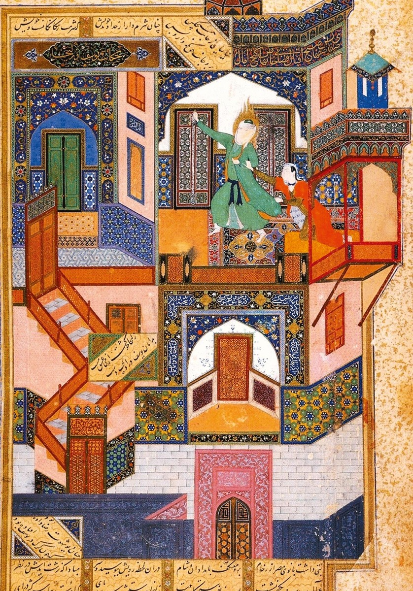

Yūsuf Ascent

Herat, 1488. The last illustrated page of a Būstān of Saʿdī, made for Sultan Ḥusayn Bāyqarā. Most of the page is a palace that Saʿdī's poem never mentions — it comes from Jāmī's Yūsuf u Zulaykhā, finished in the same city five years earlier, where the building has seven chambers and the doors give way at the touch of Yūsuf's finger.
Nothing in it is structurally possible, and everything in it is finished to the same degree of attention. That combination is why it can be read as a diagram of ascent instead of a house — and why it survives being taken apart into 43 interactable elements and put back together three different ways.
The Seven Doors
The folio itself as the playfield. Every element returns a research card; seven doors are locked, each inscribed with a term, and each opens only when you find the thing in the picture that embodies it. The eighth door is a blind and stays shut.
The Impossible Stack
Every element becomes a flat quad whose depth is its cosmological rung. Station-point compensation keeps the projection exact, so from one privileged place the exploded stack is the painting — and one degree off, the palace comes apart into seven strata.
The Ladder
The picture handed back as loose tiles. Sort each onto the rung of the ascent it belongs to, then mark yourself against our reading — and argue with it. The disagreements are the exercise.
The palace that is not a building
The deep dive: provenance (with a shelfmark correction), the three texts behind the picture, how it has been read, what our own 43-source corpus actually supports, every element catalogued, and the open questions.